01
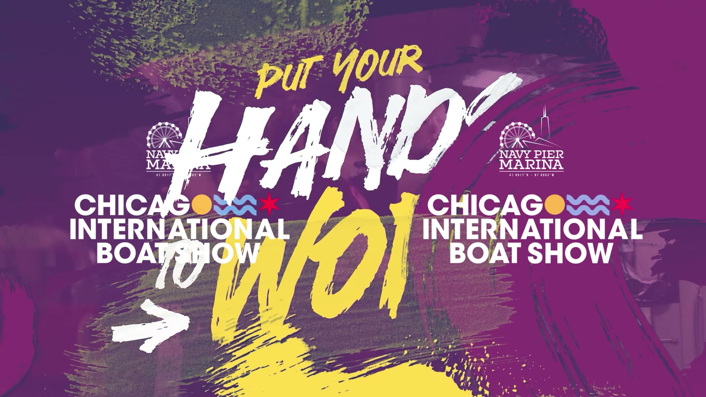
A clear brand story
Positioning, messaging and campaigns that make a complex offer easy to understand.
Who we are today, a look at our work, and where we can help next.
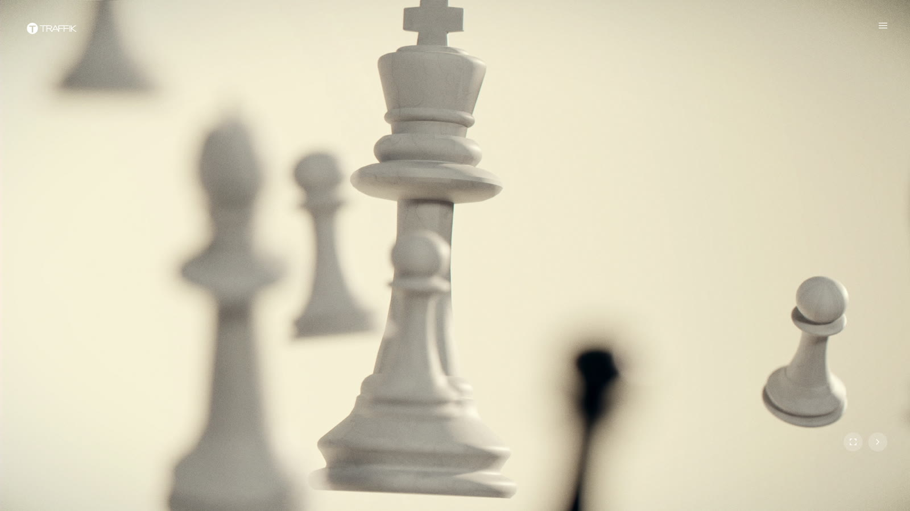
We bring strategy, creative and digital teams together to help brands tell a clear story and build useful experiences.
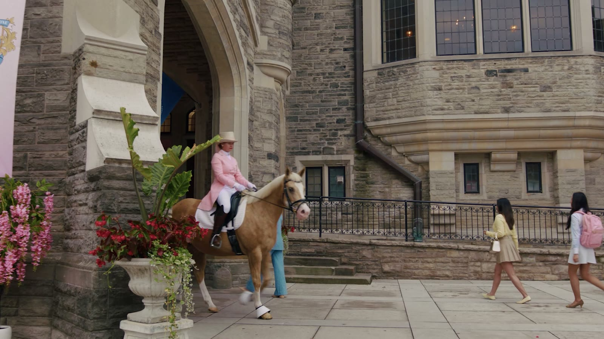
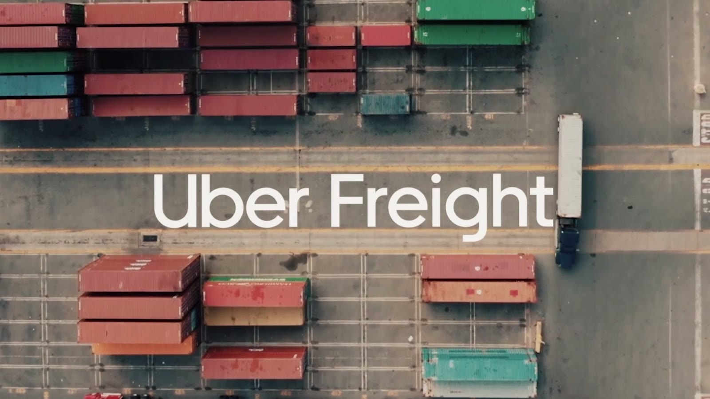
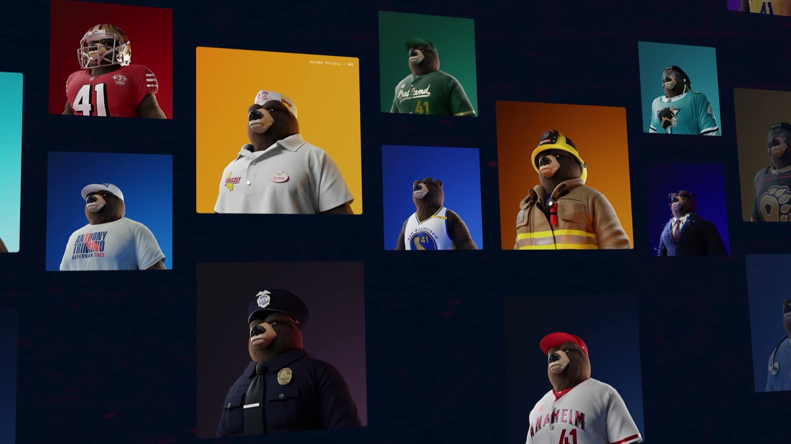

Positioning, messaging and campaigns that make a complex offer easy to understand.
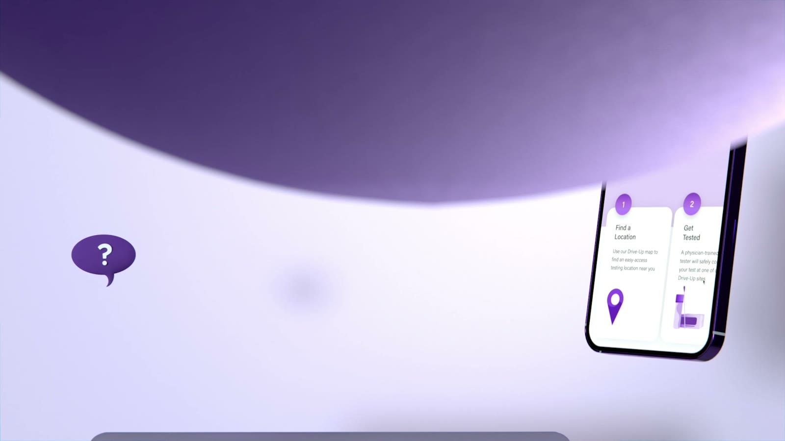
Sites, portals and tools designed around what people need to do.
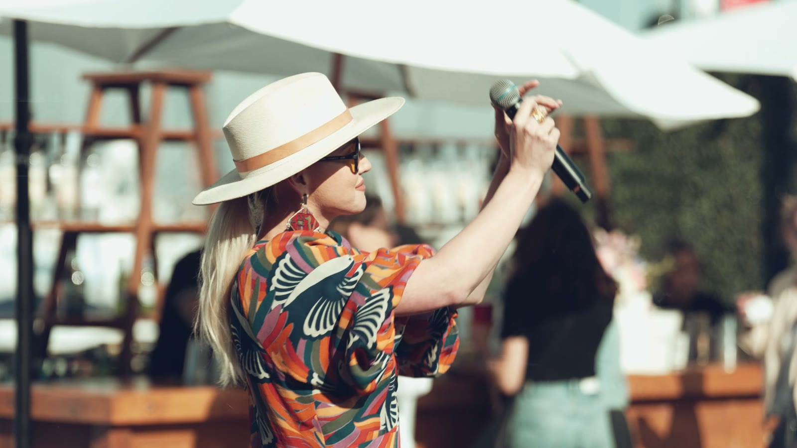
Programs that move interest toward a clear action.
[Title, need and our contribution once work is confirmed. Until then, this is the slide where we ask.]
Mitral and tricuspid kept distinct · 06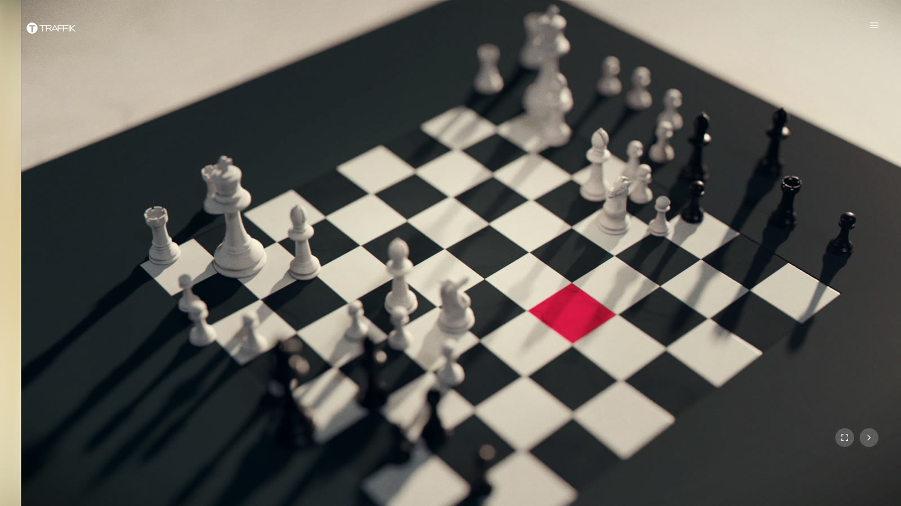
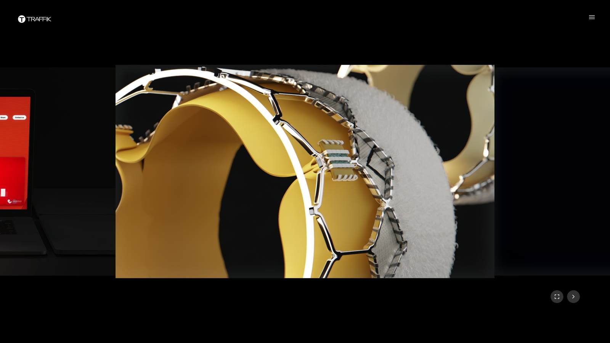
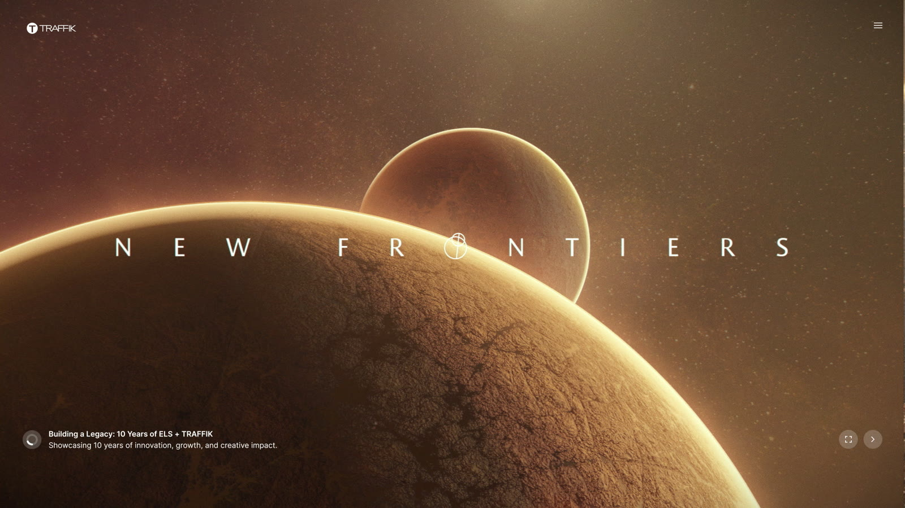
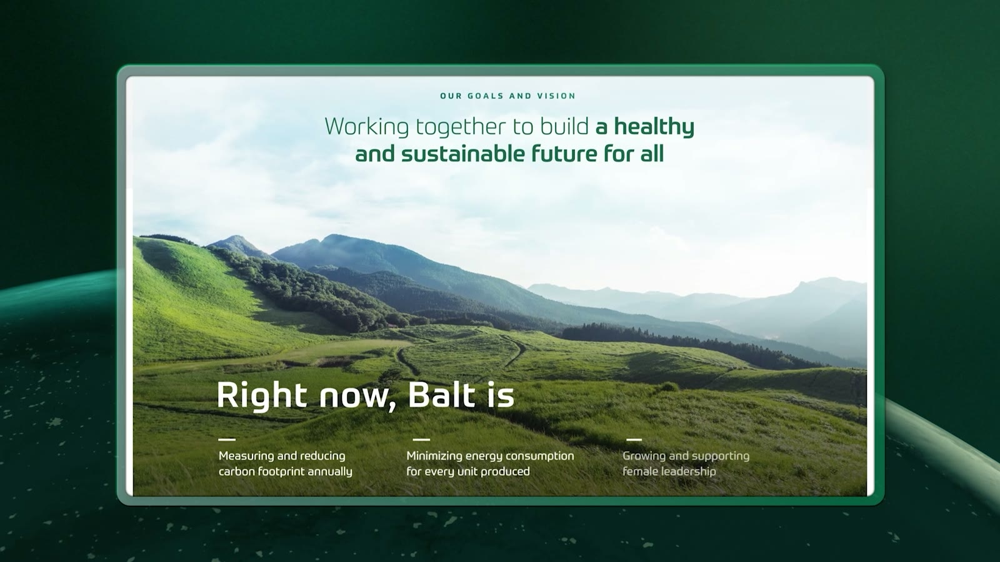
One shared brief before any work starts.
Strategy, creative and digital, shaped to the job.
Work shared early, with your review built in.
We look at what happened and adjust.